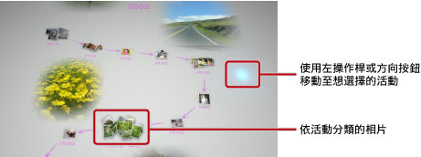

觀賞相片
每次啟動Photo Gallery，保存至PS3™的所有相片皆會自動依活動分類顯示。活動乃依相片的拍攝時間而分析分類。
選擇活動或相片
使用左操作桿或方向按鈕移動至想選擇的活動。按下 按鈕即可選擇複數的活動或相片。
按鈕即可選擇複數的活動或相片。

變換顯示方式
選擇活動後按下 按鈕，即可變換相片的顯示方式。
按鈕，即可變換相片的顯示方式。
提示
以全景顯示相片時按下 按鈕，即會顯示XMB™的
按鈕，即會顯示XMB™的 （相片）操作介面。啟動Photo Gallery時僅可執行部份操作。
（相片）操作介面。啟動Photo Gallery時僅可執行部份操作。
欣賞相片的幻燈片秀
選擇相片庫區域的活動或播放目錄並按下按鈕，再選擇 （幻燈片秀）。
（幻燈片秀）。
調整畫面上顯示的以下設定，再選擇[開始]。
| 幻燈片秀播放方式 | 選擇幻燈片秀的播放方式 |
|---|---|
| 幻燈片秀播放速度 | 選擇幻燈片秀的播放速度 |
| 排列 | 選擇相片的排列順序 |
| 幻燈片秀BGM | 從Photo Gallery收錄的樂曲中選擇幻燈片秀的BGM |
 |
從XMB™的 （音樂）中選擇幻燈片秀的BGM （音樂）中選擇幻燈片秀的BGM |
提示
- 播放幻燈片秀時若按下按鈕，即會顯示XMB™的（相片）操作介面。
- 選擇相片庫區域並顯示相片一覽時，可從[排列]選擇[依相似度排列]。
變更BGM
若要變更啟動Photo Gallery時播放的音樂，可按下無線控制器的PS按鈕啟動XMB™（交叉媒體廊），再進入（音樂）選擇想播放的音樂檔案。
提示
- 若要變更幻燈片秀的BGM，請在開始播放前顯示的設定畫面進行變更。
- 若將BGM變更為儲存媒體保存的音樂後再播放幻燈片秀，幻燈片秀結束後可能不會播放儲存媒體的樂曲。